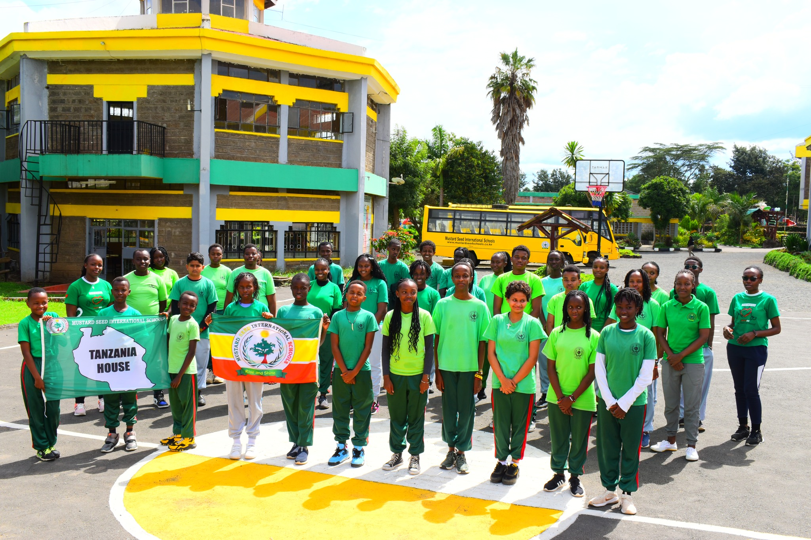

Our core values are the bedrock of our community. They guide our interactions, shape our decisions, and form the character of our students. We strive to embody these five pillars in everything we do at Mustard Seed.

1 Integrity & Professionalism
We believe in doing the right thing, even when no one is watching. Honesty, respect, and ethical behavior are expected from our staff, students, and parents alike. Our teachers maintain the highest standards of professionalism, acting as deeply committed mentors who guide students with transparency and fairness.

2 Excellence
Excellence is not an act, but a habit. We set high expectations and provide the support necessary for every student to surpass them. Whether in the classroom, the laboratory, or on the playing field—where effort yields awards and continuous personal bests—we celebrate the pursuit of becoming the finest versions of ourselves.

3 Teamwork
We achieve more together than we ever could alone. Through group projects, community events, and the fierce but friendly competition among our sports houses (Kenya, Uganda, and Tanzania), our students learn the critical importance of collaboration, active listening, and collective problem-solving.

4 Service
Leadership is rooted in service to others. We cultivate a culture where students take the initiative to support their peers, protect the environment, and uplift the broader local community. By learning to serve with humility and joy, our students prepare to be compassionate leaders in an interconnected world.